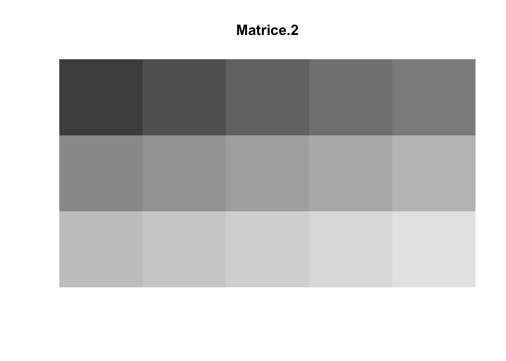

Last updated: 2026-03-09
Checks: 7 0
Knit directory: Data_Analysis/
This reproducible R Markdown analysis was created with workflowr (version 1.7.2). The Checks tab describes the reproducibility checks that were applied when the results were created. The Past versions tab lists the development history.
Great! Since the R Markdown file has been committed to the Git repository, you know the exact version of the code that produced these results.
Great job! The global environment was empty. Objects defined in the global environment can affect the analysis in your R Markdown file in unknown ways. For reproduciblity it’s best to always run the code in an empty environment.
The command set.seed(20260226) was run prior to running
the code in the R Markdown file. Setting a seed ensures that any results
that rely on randomness, e.g. subsampling or permutations, are
reproducible.
Great job! Recording the operating system, R version, and package versions is critical for reproducibility.
Nice! There were no cached chunks for this analysis, so you can be confident that you successfully produced the results during this run.
Great job! Using relative paths to the files within your workflowr project makes it easier to run your code on other machines.
Great! You are using Git for version control. Tracking code development and connecting the code version to the results is critical for reproducibility.
The results in this page were generated with repository version f0709be. See the Past versions tab to see a history of the changes made to the R Markdown and HTML files.
Note that you need to be careful to ensure that all relevant files for
the analysis have been committed to Git prior to generating the results
(you can use wflow_publish or
wflow_git_commit). workflowr only checks the R Markdown
file, but you know if there are other scripts or data files that it
depends on. Below is the status of the Git repository when the results
were generated:
Ignored files:
Ignored: .DS_Store
Ignored: .Rhistory
Ignored: .Rproj.user/
Ignored: analysis/.DS_Store
Ignored: analysis/.Rhistory
Ignored: analysis/images/.DS_Store
Unstaged changes:
Modified: analysis/ML_2.Rmd
Modified: analysis/ML_4.Rmd
Deleted: analysis/images/clipboard-1004469372.png
Deleted: analysis/images/clipboard-1149420379.png
Deleted: analysis/images/clipboard-1191025101.png
Deleted: analysis/images/clipboard-1444228596.png
Deleted: analysis/images/clipboard-176940514.png
Deleted: analysis/images/clipboard-195845525.png
Deleted: analysis/images/clipboard-2003456162.png
Deleted: analysis/images/clipboard-2061175937.png
Deleted: analysis/images/clipboard-3168697251.png
Deleted: analysis/images/clipboard-3223333217.png
Deleted: analysis/images/clipboard-3276515724.png
Deleted: analysis/images/clipboard-363149457.png
Deleted: analysis/images/clipboard-396700802.png
Deleted: analysis/images/clipboard-3988885783.png
Deleted: analysis/images/clipboard-553745980.png
Deleted: analysis/images/clipboard-580881902.png
Deleted: analysis/images/clipboard-598795064.png
Note that any generated files, e.g. HTML, png, CSS, etc., are not included in this status report because it is ok for generated content to have uncommitted changes.
These are the previous versions of the repository in which changes were
made to the R Markdown (analysis/Gael_1.Rmd) and HTML
(docs/Gael_1.html) files. If you’ve configured a remote Git
repository (see ?wflow_git_remote), click on the hyperlinks
in the table below to view the files as they were in that past version.
| File | Version | Author | Date | Message |
|---|---|---|---|---|
| html | f587984 | Huong PHAM | 2026-03-09 | Update ML 2 |
| html | 98b3a9d | Huong PHAM | 2026-03-09 | Build site. |
| html | 2e3fb5a | Huong PHAM | 2026-03-08 | Build site. |
| html | b77660e | Huong PHAM | 2026-03-08 | Build site. |
| html | 551fb64 | Huong PHAM | 2026-03-08 | Build site. |
| Rmd | ef88e31 | Huong PHAM | 2026-03-08 | 8 Mar |
| html | ef88e31 | Huong PHAM | 2026-03-08 | 8 Mar |
| Rmd | 123b956 | tthanhhuong | 2026-02-26 | Initial commit |
| html | 123b956 | tthanhhuong | 2026-02-26 | Initial commit |
= un objet simple ne contrient qu’un élément.
x <- 4
x[1] 4= série de valeurs à une dimension.
# vecteur numérique
hauteur <- c(130,300,170)
hauteur[1] 130 300 170# Pour nommer les éléments : hauteur<-c(a = 130, b = 300, c = 170).
# Le nom apparaît alors au-dessus des valeurs.
# Attention : si le nom comporte des caractères spéciaux, il est préférable d'employer des guillemets.
# Exemple : hauteur<-c("cut-off" = 130, "#!" = 300, "&," = 170). Mais ces caractères ne sont pas souhaités# vecteur de caractères
couleur <- c("Rouge","Jaune","Jaune")
couleur[1] "Rouge" "Jaune" "Jaune"enracinement <- rep(c("Faible", "Moyen", "Fort"), c(1,3,2))
# la fonction rep() réplique les éléments du premier vecteur le nombre de fois indiqué dans le deuxième vecteur
enracinement[1] "Faible" "Moyen" "Moyen" "Moyen" "Fort" "Fort" # vecteur logique
logique.1 <- c(TRUE,FALSE,TRUE)
logique.1 [1] TRUE FALSE TRUE# remarquer que les valeurs ne sont pas données entre guillemets ce qui les distingue des caractèresCréation d’un veteur vide taille non nulle
vec.vide <- vector("character", 5)
# vecteur de caractères. # La valeur 5 indique 5 guillemets vides à introduire. Pour un vecteur numérique, mettre "numeric". Les éléments affichés sont alors des zéros. Pour un vecteur logique, mettre "logical". Les éléments affichés sont alors des FALSE. Cette fonction est pratique pour générer un vecteur que l'on peut ensuite remplir petit à petit
vec.vide = vector(mode = "numeric", 3)
vec.vide[1] 0 0 0objet.nul <- c() # il est préférable d'employer objet.nul <- NULL
objet.nulNULLobjet.vide <- vector()
objet.videlogical(0)= série de valeurs à deux dimensions
Chiffres entre crochet: avant la virgule = ligne, après la virgule = colonne
Création d’une matrice:
nombre <- c(1:15)
nombre = 1:15 # peut également s'écrire nombre<-1:15
nombre [1] 1 2 3 4 5 6 7 8 9 10 11 12 13 14 15matrice.1 <- matrix(nombre,ncol=3)
matrice.1 # matrice numérique [,1] [,2] [,3]
[1,] 1 6 11
[2,] 2 7 12
[3,] 3 8 13
[4,] 4 9 14
[5,] 5 10 15L’argument ncol précise que la matrice possède 3 colonnes (de le vecteur nombre). La matrice est remplie par défaut en suivant les colonnes.
Attention : si le nombre d’éléments de “nombre” divisé par le nombre de colonnes ne produit pas un nombre entier, la fonction matrix() recycle les éléments de “nombre” pour terminer le remplissage de matrice.1. Tester avec nombre <- 1:13
matrice.1 <- 1:15 # la matrice est d'abord un vecteur
dim(matrice.1) <- c(5, 3)
matrice.1 [,1] [,2] [,3]
[1,] 1 6 11
[2,] 2 7 12
[3,] 3 8 13
[4,] 4 9 14
[5,] 5 10 15La matrice est d’abord un vecteur
dim() transforme le vecteur matrice.1 en
matrice à 5 lignes et 3 colonnes (précisé par le vecteur c(5,
3)). Si la dimension choisie (ici 5 lignes x 3 colonnes = 15 cases)
ne correspond pas exactement au nombre d’éléments de matrice.1,
la fonction dim() ne recycle pas. Elle produit un message d’erreur
Creation d’une matrice à trois lignes et remplissage en commençant par les lignes :
matrice.2 <- matrix((1:15)*100,nrow=3, byrow=TRUE)
# le vecteur (1:15)*100 est introduit directement dans la fonction matrix()
matrice.2 [,1] [,2] [,3] [,4] [,5]
[1,] 100 200 300 400 500
[2,] 600 700 800 900 1000
[3,] 1100 1200 1300 1400 1500Créatrion d’une matrice vide de taille non nulle:
mat.vide <- matrix(nrow=2, ncol=4)
# cette procédure permet de générer une matrice que l'on peut ensuite remplir petit à petit. Pour information : matrix() crée une matrice vide à une ligne et une colonne
mat.vide [,1] [,2] [,3] [,4]
[1,] NA NA NA NA
[2,] NA NA NA NA= série de valeurs à n dimensions
array.1 <- array(letters, dim=c(3,5,2))
# l'array possède 3 lignes, 5 colonnes et 2 niveaux de 3ème dimension.
array.1 , , 1
[,1] [,2] [,3] [,4] [,5]
[1,] "a" "d" "g" "j" "m"
[2,] "b" "e" "h" "k" "n"
[3,] "c" "f" "i" "l" "o"
, , 2
[,1] [,2] [,3] [,4] [,5]
[1,] "p" "s" "v" "y" "b"
[2,] "q" "t" "w" "z" "c"
[3,] "r" "u" "x" "a" "d" # array de mode caractère : les caractères sont toujours présentés entre guillemets, c'est un moyen de connaître le mode de l'objet. En ne mettant que l'argument dim=c(3,5,2), on crée un array vide rempli de NA= série de valeurs en colonnes, sont créées à partir des vecteurs ou des matrices.
dataframe.1 <- data.frame(matrice.2)
dataframe.1 X1 X2 X3 X4 X5
1 100 200 300 400 500
2 600 700 800 900 1000
3 1100 1200 1300 1400 1500hauteur <- c(130,300,170)
masse <- c(1431,1468,1398)
nb.grains <- c(320,290,147)
couleur <- c("Rouge", "Jaune", "Jaune")
dataframe.2 <- data.frame(hauteur, masse, nb.grains, couleur)
# l'ensemble des vecteurs doivent avoir le même nombre d'éléments (ici 3). Sinon la fonction produit un message d'erreur. Remplacer la zone en grisé par I(couleur). Rien ne change dans l'affichage de la data frame mais la colonne couleur n'est plus un facteur, c'est un vecteur de caractères. Ceci est vérifiable par l'instruction mode(dataframe.2$couleur), qui affiche "numeric" sans I() et "character" avec (voir les paragraphes 1.6.2.2 et 1.6.3.3 pour plus d'explication sur la fonction mode()). Les noms des colonnes peuvent être directement spécifiés. Tester : data.frame(a = hauteur, b = masse, c = nb.grains, d = couleur)
dataframe.2 hauteur masse nb.grains couleur
1 130 1431 320 Rouge
2 300 1468 290 Jaune
3 170 1398 147 Jaunemat.vide <- matrix(nrow=2, ncol=4)
# formation d'une matrice vide
dataframe.vide <- as.data.frame(mat.vide)
# cette procédure permet de générer une data frame que l'on peut ensuite remplir petit à petit. Pour information : data.frame() crée une data frame à 0 ligne et 0 colonne
dataframe.vide V1 V2 V3 V4
1 NA NA NA NA
2 NA NA NA NA= série de données, sont crées à partit d’objets de tout type: simples. vecteurs, matrices, arrays, data frames, listes, facteurs et tables.
liste.1 <- list(x, hauteur, matrice.1, dataframe.2) # Pour nommer les compartiments : liste.1<-list(a = x, b = hauteur, c = matrice.1, d = dataframe.2)
liste.1[[1]]
[1] 4
[[2]]
[1] 130 300 170
[[3]]
[,1] [,2] [,3]
[1,] 1 6 11
[2,] 2 7 12
[3,] 3 8 13
[4,] 4 9 14
[5,] 5 10 15
[[4]]
hauteur masse nb.grains couleur
1 130 1431 320 Rouge
2 300 1468 290 Jaune
3 170 1398 147 Jauneliste.2 <- mapply(FUN = seq, c(2, 4, 6), c(5, 10, 15))
# mapply() applique une fonction, écrite sans les parenthèses (ici seq()), avec le premier élément de l'argument 1 et le premier argument de l'élément 2, puis avec le deuxième élément de l'argument 1 et le deuxième argument de l'élément 2, etc. La fonction recycle si besoin. Tester : mapply(seq, 1, c(2, 4, 6)). Noter que le résultat n'est pas forcément de classe "liste". Suivant les cas, il peut être simplifié. Exemple : mapply(FUN = seq, c(2, 4, 6), c(5, 10, 15), by = 1:3), by étant le 3ème argument (d'incrémentation) de la fonction seq()
liste.2[[1]]
[1] 2 3 4 5
[[2]]
[1] 4 5 6 7 8 9 10
[[3]]
[1] 6 7 8 9 10 11 12 13 14 15liste.vide <- vector("list", 1)
# la valeur 1 indique le nombre de compartiments vides à créer. Cette procédure permet de générer une liste que l'on peut ensuite remplir petit à petit. Pour information : list() crée une liste à 0 compartiment
liste.vide[[1]]
NULLenracinement <- rep(c("Faible", "Moyen", "Fort"), c(1,3,2))
enracinement[1] "Faible" "Moyen" "Moyen" "Moyen" "Fort" "Fort" facteur.1 <- factor(enracinement)
facteur.1 # noter la différence entre le vecteur enracinement ci-dessus et le facteur facteur.1 : pas de guillemets et présence de Levels[1] Faible Moyen Moyen Moyen Fort Fort
Levels: Faible Fort Moyenenracinement.2 <- factor(c(5, 0, 10, 5, 40, 5, 0), levels=c(0, 5, 10, 40), labels=c("Faible", "Moyen", "Fort", "Tres.fort")) # l'argument levels indique la présence de quatre nombres de sorte que 0 = "Faible", 5 = "Moyen", 10 = "Fort" et 40 = "Tres.fort". Utiliser l'argument ordered = TRUE si vous souhaitez signaler enracinement.2 comme variable ordinale
enracinement.2[1] Moyen Faible Fort Moyen Tres.fort Moyen Faible
Levels: Faible Moyen Fort Tres.fortfacteur.2 <- gl(2, k=3, labels = c("Moyen", "Faible"))
# le premier nombre spécifie le nombre de classes souhaitées, soit 2. L'argument k=3 précise le nombre de répétitions, soit 3. Si l'argument labels n'est pas utilisé, les noms des classes sont des nombres, de 1 au nombre de classes indiqué, ce qui n'est pas recommandé (voir le point 5 du paragraphe 5.1)
facteur.2[1] Moyen Moyen Moyen Faible Faible Faible
Levels: Moyen Faiblefacteur.3 <- gl(2, k=1, length = 6, labels = c("Moyen", "Faible"))
# l'argument length permet de tronquer ou d'augmenter le nombre d'éléments final du facteur. Dans cet exemple, k=1, soit une seul répétition, ce qui produit Moyen Faible. Mais comme length=6, le produit Moyen Faible est utilisé en boucle jusqu'à obtenir 6 éléments
facteur.3[1] Moyen Faible Moyen Faible Moyen Faible
Levels: Moyen Faiblefacteur.vide <- factor()
# facteur.vide <- factor(vec.vide) qui utilise le vecteur vide de caractères, de taille non nulle, ne résout pas le problème de levels
facteur.videfactor()
Levels: enracinement <- rep(c("Faible", "Moyen", "Fort"), c(1,3,2))
table.1 <- table(enracinement)
table.1 # on obtient la même chose si le vecteur est transformé en facteur ou en matriceenracinement
Faible Fort Moyen
1 2 3 parcelle <- c("Nord", "Nord", "Nord", "Sud", "Nord", "Sud")
table.2 <- table(enracinement, parcelle)
table.2 parcelle
enracinement Nord Sud
Faible 1 0
Fort 1 1
Moyen 2 1# on obtient la même chose si les deux vecteurs de même nombre d'éléments sont transformés en deux facteurs ou en deux matrices
dataframe.3 <- data.frame(enracinement, parcelle)
dataframe.3 enracinement parcelle
1 Faible Nord
2 Moyen Nord
3 Moyen Nord
4 Moyen Sud
5 Fort Nord
6 Fort Sudtable.2 <- table(dataframe.3) # s'écrit également xtabs(~ enracinement + parcelle, dataframe.3) ou xtabs(~., dataframe.3). Attention : les noms des colonnes de la data frame ne sont plus indiqués dans la table si la data frame est décomposée en colonnes. Exemple : table(dataframe.3[,1], dataframe.3[,2])
table.2 parcelle
enracinement Nord Sud
Faible 1 0
Fort 1 1
Moyen 2 1mat.vide <- matrix(nrow=2, ncol=4) # formation d'une matrice vide
table.vide <- as.table(mat.vide) # cette procédure permet de générer une table que l'on peut ensuite remplir petit à petit. Pour information : table() génère un message d'erreur "rien à tabuler"
table.vide A B C D
A
B mais <- read.table("/Users/thanhhuong/Downloads/M1/Gael Millot - Stats R/mais.txt", header=TRUE)
mais Individu Hauteur Masse Nb.grains Masse.grains Couleur Germination.epi
1 1 NA NA NA NA <NA> <NA>
2 2 199 1431 320 92.1 Rouge Non
3 3 205 1468 290 89.4 Jaune Non
4 4 173 1398 147 42.6 Jaune Non
5 5 233 1622 138 43.2 Rouge Non
6 6 206 1428 166 44.1 Jaune Non
7 7 261 1574 151 50.7 Jaune Non
8 8 155 1215 293 88.2 Jaune.rouge Non
9 9 214 1457 345 108.6 Jaune.rouge Non
10 10 174 1368 234 78.8 Rouge Non
11 11 207 1355 142 42.9 Rouge Non
12 12 196 1469 301 90.4 Rouge Non
13 13 224 1474 311 99.9 Jaune Non
14 14 237 1599 273 84.6 Jaune Non
15 15 210 1437 307 99.6 Jaune Non
16 16 187 1282 303 88.8 Jaune.rouge Non
17 17 211 1505 156 46.8 Jaune.rouge Non
18 18 215 1491 278 82.8 Rouge Non
19 19 242 1830 288 90.6 Jaune Non
20 20 197 1448 263 56.4 Rouge Non
21 21 265 1881 252 63.3 Rouge Non
22 22 227 1376 276 59.7 Jaune.rouge Non
23 23 244 1667 283 86.4 Rouge Non
24 24 222 1518 271 83.4 Jaune Non
25 25 238 1729 296 91.2 Jaune Non
26 26 235 1596 304 101.1 Rouge Non
27 27 217 1462 287 84.9 Jaune Oui
28 28 184 1272 262 78.6 Jaune Non
29 29 166 1104 256 81.3 Rouge Non
30 30 231 1614 298 85.5 Rouge Non
31 31 209 1309 280 81.9 Jaune Non
32 32 NA NA NA NA Jaune Oui
33 33 278 2004 294 86.1 Jaune.rouge Non
34 34 260 1853 378 102.9 Jaune.rouge Non
35 35 217 1623 139 43.8 Jaune Oui
36 36 247 1660 391 126.3 Jaune.rouge Non
37 37 358 2206 339 102.6 Jaune Oui
38 38 251 1838 282 87.9 Jaune Non
39 39 324 2314 261 78.9 Jaune Non
40 40 328 2119 467 140.1 Jaune Non
41 41 300 2067 337 108.3 Jaune.rouge Non
42 42 266 1821 338 84.0 Jaune.rouge Non
43 43 231 1771 332 103.5 Jaune Non
44 44 313 1967 382 110.7 Jaune.rouge Non
45 45 279 1925 331 98.7 Jaune Non
46 46 236 1792 272 81.6 Jaune.rouge Non
47 47 256 1818 450 135.0 Jaune.rouge Non
48 48 293 2147 152 42.9 Jaune.rouge Non
49 49 228 1706 369 113.4 Jaune Non
50 50 269 1914 329 98.4 Jaune Non
51 51 287 1860 362 102.4 Jaune Non
52 52 196 1525 132 39.6 Jaune Oui
53 53 218 1456 421 116.7 Jaune Oui
54 54 249 1800 341 101.4 Jaune.rouge Non
55 55 321 2293 374 112.2 Jaune Non
56 56 319 2045 144 39.0 Jaune Oui
57 57 280 1964 385 120.9 Jaune Non
58 58 265 1794 145 51.1 Jaune Non
59 59 296 2098 425 124.8 Jaune Oui
60 60 240 1812 302 90.9 Jaune.rouge Non
61 61 311 2011 403 114.6 Jaune Oui
62 62 283 1971 430 116.9 Rouge Non
63 63 272 1966 361 96.0 Jaune Non
64 64 246 1757 416 136.8 Rouge Non
65 65 NA NA NA NA Jaune Non
66 66 286 2097 449 134.7 Jaune Non
67 67 299 2207 154 45.3 Rouge Non
68 68 281 1956 220 76.8 Rouge Non
69 69 278 1954 364 110.0 Jaune Non
70 70 270 1970 328 101.4 Rouge Non
71 71 269 1742 342 105.6 Rouge Non
72 72 359 2752 389 114.6 Rouge Non
73 73 250 1685 458 129.0 Rouge Non
74 74 280 1937 73 21.9 Jaune Non
75 75 307 2180 203 60.9 Rouge Non
76 76 252 1910 285 87.0 Jaune Non
77 77 288 2078 343 101.4 Jaune.rouge Non
78 78 291 2022 383 121.8 Rouge Non
79 79 299 2190 146 45.6 Jaune Non
80 80 311 2301 169 48.9 Jaune Non
81 81 283 1934 211 57.6 Rouge Non
82 82 329 2422 406 137.1 Rouge Non
83 83 237 1574 380 117.3 Jaune Non
84 84 304 2177 456 127.5 Jaune.rouge Non
85 85 315 2351 188 75.6 Jaune Non
86 86 282 1840 163 49.8 Jaune Non
87 87 314 2102 192 70.2 Rouge Non
88 88 287 2079 143 46.2 Rouge Non
89 89 235 1479 427 126.6 Jaune.rouge Non
90 90 341 2473 173 66.0 Jaune Non
91 91 249 1713 100 30.0 Jaune.rouge Non
92 92 299 1967 509 152.7 Jaune Non
93 93 310 2282 457 137.1 Jaune Non
94 94 299 2174 352 114.6 Rouge Non
95 95 286 2036 390 115.5 Rouge Non
96 96 263 1924 130 41.7 Jaune Non
97 97 308 1994 194 58.2 Jaune.rouge Non
98 98 259 1324 199 51.9 Rouge Non
99 99 268 1903 422 128.1 Jaune Non
100 100 269 1722 333 101.4 Jaune.rouge Non
Enracinement Verse Attaque Parcelle Hauteur.J7 Verse.Traitement
1 Faible <NA> Oui Nord 171 <NA>
2 Moyen Non Non Nord 196 Oui
3 Moyen Oui Non Nord 198 Oui
4 Faible Oui Non Nord 176 Oui
5 Tres.fort Oui Non Nord 230 Oui
6 Moyen Oui Non Nord 200 Non
7 Moyen Oui Non Nord 266 Oui
8 Faible Non Non Nord 176 Oui
9 Moyen Non Non Nord 220 Oui
10 Fort Non Non Nord 182 Oui
11 Moyen Non Non Nord 202 Oui
12 Moyen Oui Non Nord 188 Oui
13 Fort Oui Non Nord 222 Non
14 Moyen Non Non Nord 220 Oui
15 Moyen Oui Non Nord 205 Oui
16 Faible Non Non Nord 187 Oui
17 Tres.fort Oui Non Nord 208 Non
18 Moyen Oui Oui Sud 214 Oui
19 Faible Oui Non Sud 231 Oui
20 Fort Non Non Sud 201 Non
21 Moyen Non Non Sud 250 Oui
22 Fort Oui Non Sud 217 Non
23 Faible Non Non Sud 260 Oui
24 Faible Oui Non Sud 231 Oui
25 Moyen Oui Non Sud 231 Oui
26 Moyen Oui Non Sud 230 Non
27 Fort Non Non Sud 229 Non
28 Moyen Oui Non Sud 186 Oui
29 Fort Non Non Sud 163 Non
30 Fort Non Non Sud 237 Non
31 Faible Oui Non Sud 217 Oui
32 Tres.fort Non Non Est 193 Non
33 Fort Oui Oui Est 277 Oui
34 Fort Oui Oui Est 269 Oui
35 Faible Oui Oui Est 201 Oui
36 Tres.fort Non Non Est 254 Non
37 Faible Oui Oui Est 339 Oui
38 Moyen Oui Oui Est 264 Oui
39 Faible Oui Oui Est 312 Oui
40 Moyen Oui Oui Est 314 Oui
41 Tres.fort Non Non Est 296 Non
42 Tres.fort Non Non Est 273 Non
43 Faible Oui Oui Est 235 Oui
44 Tres.fort Non Non Est 299 Non
45 Moyen Oui Oui Est 282 Oui
46 Fort Oui Oui Est 240 Oui
47 Tres.fort Non Non Est 267 Non
48 Fort Oui Oui Est 291 Oui
49 Moyen Oui Oui Est 225 Oui
50 Moyen Oui Oui Est 274 Oui
51 Fort Non Non Est 286 Non
52 Fort Non Non Est 194 Non
53 Faible Oui Oui Est 216 Oui
54 Tres.fort Non Non Est 261 Non
55 Faible Oui Oui Est 305 Oui
56 Fort Non Non Est 301 Non
57 Tres.fort Oui Oui Est 283 Oui
58 Tres.fort Oui Oui Est 270 Oui
59 Faible Oui Oui Est 294 Oui
60 Fort Oui Oui Est 243 Oui
61 Faible Oui Oui Est 298 Oui
62 Fort Oui Oui Est 285 Oui
63 Moyen Oui Oui Est 276 Oui
64 Fort Oui Oui Est 252 Oui
65 Tres.fort Non Non Ouest 225 Oui
66 Fort Non Non Ouest 282 Non
67 Fort Non Oui Ouest 292 Non
68 Faible Non Oui Ouest 280 Oui
69 Tres.fort Non Non Ouest 275 Non
70 Moyen Non Oui Ouest 271 Non
71 Tres.fort Non Oui Ouest 271 Non
72 Fort Non Non Ouest 347 Oui
73 Faible Non Oui Ouest 255 Non
74 Tres.fort Non Non Ouest 275 Oui
75 Fort Non Oui Ouest 309 Non
76 Tres.fort Non Oui Ouest 258 Non
77 Tres.fort Non Non Ouest 292 Oui
78 Fort Non Oui Ouest 281 Oui
79 Tres.fort Non Oui Ouest 297 Non
80 Moyen Non Oui Ouest 319 Non
81 Fort Non Oui Ouest 277 Non
82 Fort Non Oui Ouest 340 Non
83 Faible Oui Non Ouest 248 Oui
84 Moyen Non Oui Ouest 309 Non
85 Moyen Non Oui Ouest 329 Non
86 Moyen Non Oui Ouest 280 Non
87 Tres.fort Non Oui Ouest 320 Non
88 Fort Non Oui Ouest 291 Non
89 Fort Non Oui Ouest 234 Non
90 Moyen Non Oui Ouest 341 Non
91 Tres.fort Non Non Ouest 252 Non
92 Tres.fort Non Non Ouest 290 Oui
93 Tres.fort Non Non Ouest 312 Oui
94 Tres.fort Non Non Ouest 305 Non
95 Tres.fort Non Non Ouest 295 Non
96 Tres.fort Non Oui Ouest 263 Non
97 Moyen Non Oui Ouest 310 Non
98 Moyen Oui Non Ouest 262 Oui
99 Tres.fort Non Non Ouest 266 Non
100 Tres.fort Non Non Ouest 270 Oui
Nb.jours.attaque Censure.droite
1 NA NA
2 NA NA
3 NA NA
4 NA NA
5 NA NA
6 NA NA
7 NA NA
8 NA NA
9 NA NA
10 NA NA
11 NA NA
12 NA NA
13 NA NA
14 NA NA
15 NA NA
16 NA NA
17 NA NA
18 NA NA
19 NA NA
20 NA NA
21 NA NA
22 NA NA
23 NA NA
24 NA NA
25 NA NA
26 NA NA
27 NA NA
28 NA NA
29 NA NA
30 NA NA
31 NA NA
32 NA NA
33 79 1
34 76 0
35 41 1
36 133 0
37 17 0
38 20 1
39 48 1
40 17 1
41 133 0
42 133 0
43 69 1
44 133 0
45 68 1
46 30 0
47 133 0
48 12 1
49 47 1
50 83 1
51 133 0
52 133 0
53 34 1
54 133 0
55 70 1
56 133 0
57 59 1
58 94 1
59 58 1
60 40 1
61 109 1
62 42 1
63 17 1
64 16 1
65 NA 0
66 133 0
67 55 1
68 94 1
69 133 0
70 46 1
71 18 0
72 133 0
73 70 1
74 133 0
75 68 1
76 48 1
77 133 0
78 104 1
79 18 1
80 48 1
81 122 1
82 66 1
83 133 0
84 113 1
85 40 0
86 72 1
87 92 1
88 112 1
89 23 1
90 60 1
91 133 0
92 133 0
93 133 0
94 133 0
95 133 0
96 61 1
97 81 1
98 133 0
99 133 0
100 133 0read.table("/Users/thanhhuong/Downloads/M1/Gael Millot - Stats R/mais.txt") # changer la zone en grisé si le chemin est différent. Si le répertoire courant de R est le bureau, il suffit d'écrire read.table("mais.txt") V1 V2 V3 V4 V5 V6 V7
1 Individu Hauteur Masse Nb.grains Masse.grains Couleur Germination.epi
2 1 <NA> <NA> <NA> <NA> <NA> <NA>
3 2 199 1431 320 92.1 Rouge Non
4 3 205 1468 290 89.4 Jaune Non
5 4 173 1398 147 42.6 Jaune Non
6 5 233 1622 138 43.2 Rouge Non
7 6 206 1428 166 44.1 Jaune Non
8 7 261 1574 151 50.7 Jaune Non
9 8 155 1215 293 88.2 Jaune.rouge Non
10 9 214 1457 345 108.6 Jaune.rouge Non
11 10 174 1368 234 78.8 Rouge Non
12 11 207 1355 142 42.9 Rouge Non
13 12 196 1469 301 90.4 Rouge Non
14 13 224 1474 311 99.9 Jaune Non
15 14 237 1599 273 84.6 Jaune Non
16 15 210 1437 307 99.6 Jaune Non
17 16 187 1282 303 88.8 Jaune.rouge Non
18 17 211 1505 156 46.8 Jaune.rouge Non
19 18 215 1491 278 82.8 Rouge Non
20 19 242 1830 288 90.6 Jaune Non
21 20 197 1448 263 56.4 Rouge Non
22 21 265 1881 252 63.3 Rouge Non
23 22 227 1376 276 59.7 Jaune.rouge Non
24 23 244 1667 283 86.4 Rouge Non
25 24 222 1518 271 83.4 Jaune Non
26 25 238 1729 296 91.2 Jaune Non
27 26 235 1596 304 101.1 Rouge Non
28 27 217 1462 287 84.9 Jaune Oui
29 28 184 1272 262 78.6 Jaune Non
30 29 166 1104 256 81.3 Rouge Non
31 30 231 1614 298 85.5 Rouge Non
32 31 209 1309 280 81.9 Jaune Non
33 32 <NA> <NA> <NA> <NA> Jaune Oui
34 33 278 2004 294 86.1 Jaune.rouge Non
35 34 260 1853 378 102.9 Jaune.rouge Non
36 35 217 1623 139 43.8 Jaune Oui
37 36 247 1660 391 126.3 Jaune.rouge Non
38 37 358 2206 339 102.6 Jaune Oui
39 38 251 1838 282 87.9 Jaune Non
40 39 324 2314 261 78.9 Jaune Non
41 40 328 2119 467 140.1 Jaune Non
42 41 300 2067 337 108.3 Jaune.rouge Non
43 42 266 1821 338 84.0 Jaune.rouge Non
44 43 231 1771 332 103.5 Jaune Non
45 44 313 1967 382 110.7 Jaune.rouge Non
46 45 279 1925 331 98.7 Jaune Non
47 46 236 1792 272 81.6 Jaune.rouge Non
48 47 256 1818 450 135.0 Jaune.rouge Non
49 48 293 2147 152 42.9 Jaune.rouge Non
50 49 228 1706 369 113.4 Jaune Non
51 50 269 1914 329 98.4 Jaune Non
52 51 287 1860 362 102.4 Jaune Non
53 52 196 1525 132 39.6 Jaune Oui
54 53 218 1456 421 116.7 Jaune Oui
55 54 249 1800 341 101.4 Jaune.rouge Non
56 55 321 2293 374 112.2 Jaune Non
57 56 319 2045 144 39.0 Jaune Oui
58 57 280 1964 385 120.9 Jaune Non
59 58 265 1794 145 51.1 Jaune Non
60 59 296 2098 425 124.8 Jaune Oui
61 60 240 1812 302 90.9 Jaune.rouge Non
62 61 311 2011 403 114.6 Jaune Oui
63 62 283 1971 430 116.9 Rouge Non
64 63 272 1966 361 96.0 Jaune Non
65 64 246 1757 416 136.8 Rouge Non
66 65 <NA> <NA> <NA> <NA> Jaune Non
67 66 286 2097 449 134.7 Jaune Non
68 67 299 2207 154 45.3 Rouge Non
69 68 281 1956 220 76.8 Rouge Non
70 69 278 1954 364 110.0 Jaune Non
71 70 270 1970 328 101.4 Rouge Non
72 71 269 1742 342 105.6 Rouge Non
73 72 359 2752 389 114.6 Rouge Non
74 73 250 1685 458 129.0 Rouge Non
75 74 280 1937 73 21.9 Jaune Non
76 75 307 2180 203 60.9 Rouge Non
77 76 252 1910 285 87.0 Jaune Non
78 77 288 2078 343 101.4 Jaune.rouge Non
79 78 291 2022 383 121.8 Rouge Non
80 79 299 2190 146 45.6 Jaune Non
81 80 311 2301 169 48.9 Jaune Non
82 81 283 1934 211 57.6 Rouge Non
83 82 329 2422 406 137.1 Rouge Non
84 83 237 1574 380 117.3 Jaune Non
85 84 304 2177 456 127.5 Jaune.rouge Non
86 85 315 2351 188 75.6 Jaune Non
87 86 282 1840 163 49.8 Jaune Non
88 87 314 2102 192 70.2 Rouge Non
89 88 287 2079 143 46.2 Rouge Non
90 89 235 1479 427 126.6 Jaune.rouge Non
91 90 341 2473 173 66.0 Jaune Non
92 91 249 1713 100 30.0 Jaune.rouge Non
93 92 299 1967 509 152.7 Jaune Non
94 93 310 2282 457 137.1 Jaune Non
95 94 299 2174 352 114.6 Rouge Non
96 95 286 2036 390 115.5 Rouge Non
97 96 263 1924 130 41.7 Jaune Non
98 97 308 1994 194 58.2 Jaune.rouge Non
99 98 259 1324 199 51.9 Rouge Non
100 99 268 1903 422 128.1 Jaune Non
101 100 269 1722 333 101.4 Jaune.rouge Non
V8 V9 V10 V11 V12 V13
1 Enracinement Verse Attaque Parcelle Hauteur.J7 Verse.Traitement
2 Faible <NA> Oui Nord 171 <NA>
3 Moyen Non Non Nord 196 Oui
4 Moyen Oui Non Nord 198 Oui
5 Faible Oui Non Nord 176 Oui
6 Tres.fort Oui Non Nord 230 Oui
7 Moyen Oui Non Nord 200 Non
8 Moyen Oui Non Nord 266 Oui
9 Faible Non Non Nord 176 Oui
10 Moyen Non Non Nord 220 Oui
11 Fort Non Non Nord 182 Oui
12 Moyen Non Non Nord 202 Oui
13 Moyen Oui Non Nord 188 Oui
14 Fort Oui Non Nord 222 Non
15 Moyen Non Non Nord 220 Oui
16 Moyen Oui Non Nord 205 Oui
17 Faible Non Non Nord 187 Oui
18 Tres.fort Oui Non Nord 208 Non
19 Moyen Oui Oui Sud 214 Oui
20 Faible Oui Non Sud 231 Oui
21 Fort Non Non Sud 201 Non
22 Moyen Non Non Sud 250 Oui
23 Fort Oui Non Sud 217 Non
24 Faible Non Non Sud 260 Oui
25 Faible Oui Non Sud 231 Oui
26 Moyen Oui Non Sud 231 Oui
27 Moyen Oui Non Sud 230 Non
28 Fort Non Non Sud 229 Non
29 Moyen Oui Non Sud 186 Oui
30 Fort Non Non Sud 163 Non
31 Fort Non Non Sud 237 Non
32 Faible Oui Non Sud 217 Oui
33 Tres.fort Non Non Est 193 Non
34 Fort Oui Oui Est 277 Oui
35 Fort Oui Oui Est 269 Oui
36 Faible Oui Oui Est 201 Oui
37 Tres.fort Non Non Est 254 Non
38 Faible Oui Oui Est 339 Oui
39 Moyen Oui Oui Est 264 Oui
40 Faible Oui Oui Est 312 Oui
41 Moyen Oui Oui Est 314 Oui
42 Tres.fort Non Non Est 296 Non
43 Tres.fort Non Non Est 273 Non
44 Faible Oui Oui Est 235 Oui
45 Tres.fort Non Non Est 299 Non
46 Moyen Oui Oui Est 282 Oui
47 Fort Oui Oui Est 240 Oui
48 Tres.fort Non Non Est 267 Non
49 Fort Oui Oui Est 291 Oui
50 Moyen Oui Oui Est 225 Oui
51 Moyen Oui Oui Est 274 Oui
52 Fort Non Non Est 286 Non
53 Fort Non Non Est 194 Non
54 Faible Oui Oui Est 216 Oui
55 Tres.fort Non Non Est 261 Non
56 Faible Oui Oui Est 305 Oui
57 Fort Non Non Est 301 Non
58 Tres.fort Oui Oui Est 283 Oui
59 Tres.fort Oui Oui Est 270 Oui
60 Faible Oui Oui Est 294 Oui
61 Fort Oui Oui Est 243 Oui
62 Faible Oui Oui Est 298 Oui
63 Fort Oui Oui Est 285 Oui
64 Moyen Oui Oui Est 276 Oui
65 Fort Oui Oui Est 252 Oui
66 Tres.fort Non Non Ouest 225 Oui
67 Fort Non Non Ouest 282 Non
68 Fort Non Oui Ouest 292 Non
69 Faible Non Oui Ouest 280 Oui
70 Tres.fort Non Non Ouest 275 Non
71 Moyen Non Oui Ouest 271 Non
72 Tres.fort Non Oui Ouest 271 Non
73 Fort Non Non Ouest 347 Oui
74 Faible Non Oui Ouest 255 Non
75 Tres.fort Non Non Ouest 275 Oui
76 Fort Non Oui Ouest 309 Non
77 Tres.fort Non Oui Ouest 258 Non
78 Tres.fort Non Non Ouest 292 Oui
79 Fort Non Oui Ouest 281 Oui
80 Tres.fort Non Oui Ouest 297 Non
81 Moyen Non Oui Ouest 319 Non
82 Fort Non Oui Ouest 277 Non
83 Fort Non Oui Ouest 340 Non
84 Faible Oui Non Ouest 248 Oui
85 Moyen Non Oui Ouest 309 Non
86 Moyen Non Oui Ouest 329 Non
87 Moyen Non Oui Ouest 280 Non
88 Tres.fort Non Oui Ouest 320 Non
89 Fort Non Oui Ouest 291 Non
90 Fort Non Oui Ouest 234 Non
91 Moyen Non Oui Ouest 341 Non
92 Tres.fort Non Non Ouest 252 Non
93 Tres.fort Non Non Ouest 290 Oui
94 Tres.fort Non Non Ouest 312 Oui
95 Tres.fort Non Non Ouest 305 Non
96 Tres.fort Non Non Ouest 295 Non
97 Tres.fort Non Oui Ouest 263 Non
98 Moyen Non Oui Ouest 310 Non
99 Moyen Oui Non Ouest 262 Oui
100 Tres.fort Non Non Ouest 266 Non
101 Tres.fort Non Non Ouest 270 Oui
V14 V15
1 Nb.jours.attaque Censure.droite
2 <NA> <NA>
3 <NA> <NA>
4 <NA> <NA>
5 <NA> <NA>
6 <NA> <NA>
7 <NA> <NA>
8 <NA> <NA>
9 <NA> <NA>
10 <NA> <NA>
11 <NA> <NA>
12 <NA> <NA>
13 <NA> <NA>
14 <NA> <NA>
15 <NA> <NA>
16 <NA> <NA>
17 <NA> <NA>
18 <NA> <NA>
19 <NA> <NA>
20 <NA> <NA>
21 <NA> <NA>
22 <NA> <NA>
23 <NA> <NA>
24 <NA> <NA>
25 <NA> <NA>
26 <NA> <NA>
27 <NA> <NA>
28 <NA> <NA>
29 <NA> <NA>
30 <NA> <NA>
31 <NA> <NA>
32 <NA> <NA>
33 <NA> <NA>
34 79 1
35 76 0
36 41 1
37 133 0
38 17 0
39 20 1
40 48 1
41 17 1
42 133 0
43 133 0
44 69 1
45 133 0
46 68 1
47 30 0
48 133 0
49 12 1
50 47 1
51 83 1
52 133 0
53 133 0
54 34 1
55 133 0
56 70 1
57 133 0
58 59 1
59 94 1
60 58 1
61 40 1
62 109 1
63 42 1
64 17 1
65 16 1
66 <NA> 0
67 133 0
68 55 1
69 94 1
70 133 0
71 46 1
72 18 0
73 133 0
74 70 1
75 133 0
76 68 1
77 48 1
78 133 0
79 104 1
80 18 1
81 48 1
82 122 1
83 66 1
84 133 0
85 113 1
86 40 0
87 72 1
88 92 1
89 112 1
90 23 1
91 60 1
92 133 0
93 133 0
94 133 0
95 133 0
96 133 0
97 61 1
98 81 1
99 133 0
100 133 0
101 133 0dataframe.4 <- data.frame()
fix(dataframe.4)
matrice.2 <- matrix((1:15)*100,nrow=3, byrow=TRUE)
dataframe.1 <- data.frame(matrice.2)
dataframe.4 <- edit(dataframe.1)length(x)[1] 1length(hauteur)[1] 3length(matrice.1)[1] 15length(array.1)[1] 30length(dataframe.1)[1] 5length(liste.1)[1] 4length(facteur.1)[1] 6length(table.2)[1] 6mode(x)[1] "numeric"mode(hauteur)[1] "numeric"mode(logique.1)[1] "logical"mode(matrice.1)[1] "numeric"mode(array.1)[1] "character"mode(dataframe.1)[1] "list"mode(liste.1)[1] "list"mode(facteur.1)[1] "numeric"mode(table.2)[1] "numeric"c("pasbondutout", "cevecteurilest")[1] "pasbondutout" "cevecteurilest"c("couleur", "enracinement") [1] "couleur" "enracinement"c(couleur, enracinement) # les éléments de l'objet couleur et de l'objet enracinement sont rassemblés[1] "Rouge" "Jaune" "Jaune" "Faible" "Moyen" "Moyen" "Moyen" "Fort"
[9] "Fort" 2*c(130, 300, 170) # multiplication par 2 possible[1] 260 600 340#2*c(130, 300, "170") # multiplication impossible car le troisième élément est entre guillemets. Le vecteur est donc considéré comme de mode caractère (un seul mode possible pour les vecteurs)
mode(vec.vide)[1] "numeric"mode(mat.vide)[1] "logical"mode(dataframe.vide)[1] "list"mode(liste.vide)[1] "list"mode(table.vide)[1] "logical"typeof(hauteur)[1] "double"typeof(couleur)[1] "character"typeof(logique.1)[1] "logical"typeof(matrice.1)[1] "integer"typeof(array.1)[1] "character"typeof(dataframe.2)[1] "list"typeof(liste.1)[1] "list"typeof(facteur.1)[1] "integer"typeof(table.2)[1] "integer"typeof(1) # l'entier 1 est considéré comme double par R[1] "double"typeof(c(1, 2, 3)) # la concaténation de nombres de type "double" ne change rien[1] "double"typeof(1:3) # 1:3 fournit la série de nombres 1 2 3. L'opérateur :, utilisé avec des entiers, produit donc des entiers[1] "integer"typeof(c(1:3)) # la concaténation d'entiers ne change rien[1] "integer"typeof(seq(1, 3, 1)) # seq(1, 3, 1) fournit la série de nombres 1 2 3, qui sont de type "double" pour R[1] "double"typeof(hauteur) # le vecteur hauteur a été créé par concaténation d'entiers (voir le paragraphe 1.6.1.1), mais qui sont stockés comme double dans le vecteur (comme c(1, 2, 3) ci-dessus)[1] "double"typeof(dataframe.2$hauteur) # la colonne hauteur de dataframe.2 a été créée dans R à partir du vecteur numérique hauteur (voir le paragraphe 1.6.1.1), le type double des nombres dans hauteur étant conservé dans la data frame. Voir le paragraphe 1.6.3.3 pour l'explication de $[1] "double"typeof(mais$Hauteur) # la data frame "mais" a été importée à partir du fichier mais.txt, à l'aide de la fonction read.table(). Dans cette situation particulière, R privilégie le type de stockage entier pour les entiers[1] "integer"class(hauteur)[1] "numeric"class(couleur)[1] "character"class(logique.1)[1] "logical"class(matrice.1)[1] "matrix" "array" class(array.1)[1] "array"class(dataframe.2)[1] "data.frame"class(liste.1)[1] "list"class(facteur.1)[1] "factor"class(table.2)[1] "table"str(hauteur) num [1:3] 130 300 170str(couleur) chr [1:3] "Rouge" "Jaune" "Jaune"str(logique.1) logi [1:3] TRUE FALSE TRUEstr(matrice.1) int [1:5, 1:3] 1 2 3 4 5 6 7 8 9 10 ...str(array.1) chr [1:3, 1:5, 1:2] "a" "b" "c" "d" "e" "f" "g" "h" "i" "j" "k" "l" "m" ...str(dataframe.2)'data.frame': 3 obs. of 4 variables:
$ hauteur : num 130 300 170
$ masse : num 1431 1468 1398
$ nb.grains: num 320 290 147
$ couleur : chr "Rouge" "Jaune" "Jaune"str(liste.1)List of 4
$ : num 4
$ : num [1:3] 130 300 170
$ : int [1:5, 1:3] 1 2 3 4 5 6 7 8 9 10 ...
$ :'data.frame': 3 obs. of 4 variables:
..$ hauteur : num [1:3] 130 300 170
..$ masse : num [1:3] 1431 1468 1398
..$ nb.grains: num [1:3] 320 290 147
..$ couleur : chr [1:3] "Rouge" "Jaune" "Jaune"str(facteur.1) Factor w/ 3 levels "Faible","Fort",..: 1 3 3 3 2 2str(table.2) 'table' int [1:3, 1:2] 1 1 2 0 1 1
- attr(*, "dimnames")=List of 2
..$ enracinement: chr [1:3] "Faible" "Fort" "Moyen"
..$ parcelle : chr [1:2] "Nord" "Sud"attributes(hauteur)NULLattributes(couleur)NULLattributes(logique.1)NULLattributes(matrice.1)$dim
[1] 5 3attributes(array.1)$dim
[1] 3 5 2attributes(dataframe.2)$names
[1] "hauteur" "masse" "nb.grains" "couleur"
$class
[1] "data.frame"
$row.names
[1] 1 2 3attributes(liste.1)NULLattributes(facteur.1)$levels
[1] "Faible" "Fort" "Moyen"
$class
[1] "factor"attributes(table.2)$dim
[1] 3 2
$dimnames
$dimnames$enracinement
[1] "Faible" "Fort" "Moyen"
$dimnames$parcelle
[1] "Nord" "Sud"
$class
[1] "table"attr(table.2, which = "dim") # résultat de classe "vecteur". Remplacer dim par class ou dimnames. Voir l'aide ?attr() pour la liste des éléments affichables, mais dont le résultat dépend de la classe de l'objet[1] 3 2summary(hauteur) Min. 1st Qu. Median Mean 3rd Qu. Max.
130 150 170 200 235 300 summary(couleur) Length Class Mode
3 character character summary(logique.1) Mode FALSE TRUE
logical 1 2 summary(matrice.1) V1 V2 V3
Min. :1 Min. : 6 Min. :11
1st Qu.:2 1st Qu.: 7 1st Qu.:12
Median :3 Median : 8 Median :13
Mean :3 Mean : 8 Mean :13
3rd Qu.:4 3rd Qu.: 9 3rd Qu.:14
Max. :5 Max. :10 Max. :15 summary(array.1) Length Class Mode
30 array character summary(dataframe.2) hauteur masse nb.grains couleur
Min. :130 Min. :1398 Min. :147.0 Length:3
1st Qu.:150 1st Qu.:1414 1st Qu.:218.5 Class :character
Median :170 Median :1431 Median :290.0 Mode :character
Mean :200 Mean :1432 Mean :252.3
3rd Qu.:235 3rd Qu.:1450 3rd Qu.:305.0
Max. :300 Max. :1468 Max. :320.0 summary(liste.1) Length Class Mode
[1,] 1 -none- numeric
[2,] 3 -none- numeric
[3,] 15 -none- numeric
[4,] 4 data.frame list summary(facteur.1)Faible Fort Moyen
1 2 3 summary(table.2)Number of cases in table: 6
Number of factors: 2
Test for independence of all factors:
Chisq = 0.75, df = 2, p-value = 0.6873
Chi-squared approximation may be incorrecthauteur <- c(130,300,170)
hauteur[1] 130 300 170enracinement <- rep(c("Faible", "Moyen", "Fort"), c(1,3,2))
enracinement[1] "Faible" "Moyen" "Moyen" "Moyen" "Fort" "Fort" enracinement[c(3, 5)][1] "Moyen" "Fort" enracinement[c(3:5)][1] "Moyen" "Moyen" "Fort" hauteur/2[1] 65 150 85hauteur < 200[1] TRUE FALSE TRUE! hauteur < 200 # en logique, le point d'exclamation signifie NON (NOT en anglais). Ainsi, ! TRUE signifie NOT TRUE donc FALSE[1] FALSE TRUE FALSEhauteur[3][1] 170hauteur[-1] #bỏ đi giá trị 1 của vecteur[1] 300 170hauteur[hauteur > 150] # équivalent de hauteur[c(FALSE, TRUE, TRUE)] car hauteur > 150 renvoie ce résultat logique. Ce qui est sélectionné est ce qui est TRUE[1] 300 170hauteur[hauteur>=100 & hauteur<=200][1] 130 170sort(hauteur)[1:2] [1] 130 170# sort(hauteur) trie les éléments par ordre croissant (par défaut) et [1:2] permet de prendre les premier et deuxième éléments parmi les triés, soit les deux plus petits éléments de hauteur. Voir également l'annexe 19
which(hauteur==300) # la fonction which() indique les positions de TRUE issues de hauteur == 300 - xem vị trí ko phải đếm[1] 2which(enracinement=="Fort")[1] 5 6hauteur.2 <- hauteur # hauteur.2 est utilisé à la place de hauteur pour ne pas modifier le vecteur hauteur qui servira par la suite
hauteur.2[1] 130 300 170hauteur.2[which(hauteur.2==300)] <- 1000 # which(hauteur.2==300) a pour résultat 2. Donc l'instruction est une équivalence de hauteur.2[2]<-1000
hauteur.2[1] 130 1000 170names(hauteur) <- c("a", "b", "c") # attention : le nombre d'éléments dans le vecteur de caractères doit être identique au nombre d'éléments dans le vecteur nommé. S'il est inférieur, des NA sont générés dans les noms, ce qui n'est pas une situation souhaitable. S'il est supérieur, un message d'erreur apparaît. Les éléments peuvent aussi être directement nommés lors de la création du vecteur : hauteur <- c(a = 130, b = 300, c = 170) ou hauteur <- c("a" = 130, "b" = 300, "c" = 170)
hauteur a b c
130 300 170 names(hauteur) <- NULL
hauteur[1] 130 300 170hauteur[10] # la position 10 n'existe pas dans le vecteur hauteur mais R n'affiche pas de message d'erreur[1] NAvecteur.faux <- hauteur # vecteur.faux est utilisé à la place de hauteur pour ne pas modifier le vecteur hauteur qui servira par la suite
vecteur.faux[10] <- 1000 # aucun message d'erreur n'est produit. Pourtant, le vecteur ne possède que trois éléments
vecteur.faux # la valeur 1000 est assignée à la dixième position de vecteur.faux, les positions entre 4 et 9 devenant des NA [1] 130 300 170 NA NA NA NA NA NA 1000matrice.1 <- matrix(1:15,ncol=3)
matrice.1 [,1] [,2] [,3]
[1,] 1 6 11
[2,] 2 7 12
[3,] 3 8 13
[4,] 4 9 14
[5,] 5 10 15matrice.2 <- matrix((1:15)*100,nrow=3, byrow=TRUE)
matrice.2 [,1] [,2] [,3] [,4] [,5]
[1,] 100 200 300 400 500
[2,] 600 700 800 900 1000
[3,] 1100 1200 1300 1400 1500dim(matrice.2)[1] 3 5nrow(matrice.2) # ou dim(matrice.2)[1][1] 3ncol(matrice.2) # ou dim(matrice.2)[2][1] 5matrice.2[3, 2] # [] est l'opérateur d'extraction. Le nombre de virgules détermine le nombre de dimensions (zero virgule pour 1 dimension, 1 virgule pour deux dimensions). Le nombre avant la première virgule spécifie le numéro de ligne, celui après la virgule le numéro de colonne[1] 1200matrice.2[6] # attention : lorsqu'il n'y a pas de virgule entre les crochets, l'emplacement est donné suivant le numéro d'ordre dans la matrice, qui est par défaut le remplissage en commençant par le coin supérieur gauche et en descendant les colonnes une par une, ce qui n'est pas toujours commode[1] 1200which(matrice.2==900, arr.ind=TRUE) # "arr.ind=TRUE" donne l'emplacement avec les numéros de lignes et de colonnes. Sinon l'emplacement est donné suivant le numéro d'ordre dans la matrice, en descendant les colonnes une par une, ce qui n'est pas toujours commode row col
[1,] 2 4sort(matrice.2, decreasing=TRUE)[1:3] # la fonction sort() réordonne la matrice en la remplissant par colonne (d'abord la première colonne, puis la deuxième, etc.). L'argument decreasing=TRUE indique l'ordre décroissant. Donc les trois premières valeurs triées sont les plus grandes. Voir également l'annexe 19[1] 1500 1400 1300tempo <- matrix(c(c(2, 3), c(1, 2)), ncol = 2) # création d'une matrice de coordonnées, le premier vecteur c(2, 3) contenant les numéros de ligne et le deuxième c(1, 2) les numéros de colonne, des éléments à extraire
tempo # la première colonne correspond aux numéros de ligne et la deuxième aux numéros de colonne [,1] [,2]
[1,] 2 1
[2,] 3 2matrice.2[tempo] # attention : écrire des couples de coordonnées de cette façon matrice.2[c(2, 3), c(1, 2)] ne fonctionne pas, car dans ce cas, c'est l'intersection des lignes 2 & 3 avec les colonnes 1 & 2 qui est extraite[1] 600 1200matrice.2[matrice.2>1050][1] 1100 1200 1300 1400 1500matrice.2[matrice.2>=500 & matrice.2<=900][1] 600 700 800 900 500matrice.2[,2] # contrairement aux data frames, matrice.2[2] n'extrait pas la 2ème colonne mais le deuxième éléments (d'après un remplissage de la matrice suivant les colonnes)[1] 200 700 1200matrice.2[,2, drop=FALSE] # l'argument drop=FALSE permet de conserver les données en colonnes [,1]
[1,] 200
[2,] 700
[3,] 1200matrice.2[,-2] [,1] [,2] [,3] [,4]
[1,] 100 300 400 500
[2,] 600 800 900 1000
[3,] 1100 1300 1400 1500matrice.2[,-c(2,4)] # il est nécessaire d'écrire un vecteur c(2,4) [,1] [,2] [,3]
[1,] 100 300 500
[2,] 600 800 1000
[3,] 1100 1300 1500rbind(matrice.2,c(-2,-1,0,1,2)) # nécessite un vecteur (ou matrice à une ligne) de même dimension (même nombre de colonnes). Si ce n'est pas le cas, les colonnes sont remplies par récurrence (nombre d'éléments du vecteur inférieur au nombre de colonnes) ou en tronquant le vecteur (nombre d'éléments du vecteur supérieur au nombre de colonnes) et un message d'alerte est généré [,1] [,2] [,3] [,4] [,5]
[1,] 100 200 300 400 500
[2,] 600 700 800 900 1000
[3,] 1100 1200 1300 1400 1500
[4,] -2 -1 0 1 2rbind(matrice.2,rep("a", ncol(matrice.2))) [,1] [,2] [,3] [,4] [,5]
[1,] "100" "200" "300" "400" "500"
[2,] "600" "700" "800" "900" "1000"
[3,] "1100" "1200" "1300" "1400" "1500"
[4,] "a" "a" "a" "a" "a" cbind(matrice.2, matrice.1[1:3,2])# nécessite un vecteur (ou matrice à une colonne) de même dimension (même nombre de lignes). Si ce n'est pas le cas, les lignes sont remplies par récurrence (nombre d'éléments du vecteur inférieur au nombre de lignes) ou en tronquant le vecteur (nombre d'éléments du vecteur supérieur au nombre de lignes) et un message d'alerte est généré [,1] [,2] [,3] [,4] [,5] [,6]
[1,] 100 200 300 400 500 6
[2,] 600 700 800 900 1000 7
[3,] 1100 1200 1300 1400 1500 8matrice.2 - 2 [,1] [,2] [,3] [,4] [,5]
[1,] 98 198 298 398 498
[2,] 598 698 798 898 998
[3,] 1098 1198 1298 1398 1498sum(matrice.2)[1] 12000apply(matrice.2,1,sum) # la fonction apply() applique la fonction sum() (écrite sans les parenthèses) sur les lignes (la valeur 1). Sur les colonnes, remplacer la valeur 1 par 2. Les fonctions margin.table() et addmargins() fonctionnent également[1] 1500 4000 6500matrice.2 / 2 # attention : il est possible de diviser par un vecteur possédant un nombre d'éléments n compris entre 1 et le nombre de cases de la matrice (ici 15). Si n = 1, l'ensemble des cases sont divisées par le nombre. Si n > 1, R recycle les valeurs du vecteur autant de fois qu'il le faut, et divise en respectant l'ordre de remplissage par défaut des matrices (départ en haut à gauche, en remplissant par colonnes). Ainsi, avec matrice.2 / 1:2, le nombre 100 est divisé par 1, 600 par 2, 1100 par 1, 200 par 2, etc. Un message d'alerte est produit, sauf si le nombre d'éléments du vecteur est égal au nombre de lignes (ici 3) ou de colonnes (ici 5) ou de cases (ici 15) de la matrice. Si n dépasse le nombre de cases de la matrice, un message d'erreur est produit [,1] [,2] [,3] [,4] [,5]
[1,] 50 100 150 200 250
[2,] 300 350 400 450 500
[3,] 550 600 650 700 750matrice.2 / matrice.2 # si la matrice divisante n'est pas exactement de même dimension que la matrice divisée, différentes choses se produisent. Si la matrice possède deux dimensions (au moins 2 lignes et au moins 2 colonnes), un message d'erreur est produit. Si la matrice divisante n'a qu'une dimension, elle est considérée comme un vecteur divisant et les règles ci-dessus sont appliquées [,1] [,2] [,3] [,4] [,5]
[1,] 1 1 1 1 1
[2,] 1 1 1 1 1
[3,] 1 1 1 1 1dimnames(matrice.2) <- list(c("r1","r2","r3"),c("c1","c2","c3","c4","c5"))
matrice.2 c1 c2 c3 c4 c5
r1 100 200 300 400 500
r2 600 700 800 900 1000
r3 1100 1200 1300 1400 1500dimnames(matrice.2) # le résultat est un objet de classe "liste" avec [[1]] pour les lignes et [[2]] pour les colonnes[[1]]
[1] "r1" "r2" "r3"
[[2]]
[1] "c1" "c2" "c3" "c4" "c5"dimnames(matrice.2)[[2]][4] <- "Couleur"
matrice.2 c1 c2 c3 Couleur c5
r1 100 200 300 400 500
r2 600 700 800 900 1000
r3 1100 1200 1300 1400 1500matrice.2["r1","c2"][1] 200dimnames(matrice.2) <- NULL
matrice.2 [,1] [,2] [,3] [,4] [,5]
[1,] 100 200 300 400 500
[2,] 600 700 800 900 1000
[3,] 1100 1200 1300 1400 1500matrice.2[20] # la position 20 n'existe pas dans la matrice matrice.2. La position maximale est matrice.2[15], qui correspond à matrice.2[3, 5] (voir ci-dessus). Mais R n'affiche pas de message d'erreur[1] NA#matrice.2[20, 1] # par contre, avec le positionnement par ligne et colonne (virgule à l'intérieur des crochets), l'erreur est signifiée
matrice.fausse <- matrice.2 # matrice.fausse est utilisée à la place de matrice.2 pour ne pas modifier matrice.2 qui servira par la suite
matrice.fausse[20] <- 1000 # aucun message d'erreur n'est produit. Pourtant, la matrice ne possède que 15 cases
matrice.fausse # la valeur 1000 est assignée à la vingtième position de matrice.2, convertie en vecteur, les positions entre 16 et 19 devenant des NA [1] 100 600 1100 200 700 1200 300 800 1300 400 900 1400 500 1000 1500
[16] NA NA NA NA 1000matrice.3 <- matrice.2
for (i in 1:ncol(matrice.3)){matrice.3[,i] <- rev(matrice.3 [,i])} # la fonction rev() inverse les éléments
matrice.3 <- t(matrice.3) # la fonction t() est la transposée d'une matrice
image(1:nrow(matrice.3), 1:ncol(matrice.3), matrice.3, main="Matrice.2", col = grey.colors(length(unique(matrice.2))), xlab="", ylab="", xaxt="n", yaxt="n", bty="n") # length(unique(matrice.2)) fournit le nombre de valeurs différentes de la matrice soit 15 pour matrice.2. Voir le paragraphe 1.10.4 pour l'explication des arguments graphiques de la fonction image() comme xaxt par exemple. Le code permettant d'afficher les numéros de ligne et de colonne est le suivant : image(1:nrow(matrice.3), 1:ncol(matrice.3), matrice.3, main="Matrice.2", col = grey.colors(length(unique(matrice.2))), xlab="Numéro de colonne", ylab=" Numéro de ligne", yaxt="n", bty="o", cex.lab=1.5, cex.axis=1.5) ; axis(side=2, at =nrow(matrice.2):1, labels =1:nrow(matrice.2), cex.axis=1.5). Employer l'argument useRaster = TRUE en cas de matrice de grande taille (passe du vectoriel au matriciel bitmap, un format moins lourd à gérer). Pour la couleur, remplacer la fonction grey.colors(length(unique(matrice.2))) par heat.colors(length(unique(matrice.2))) par exemple
| Version | Author | Date |
|---|---|---|
| ef88e31 | Huong PHAM | 2026-03-08 |
hauteur <- c(130,300,170)
masse <- c(1431,1468,1398)
nb.grains <- c(320,290,147)
couleur <- c("Rouge","Jaune","Jaune")
dataframe.2 <- data.frame(hauteur, masse, nb.grains, couleur)
dataframe.2 hauteur masse nb.grains couleur
1 130 1431 320 Rouge
2 300 1468 290 Jaune
3 170 1398 147 Jaunedim(dataframe.2) # donne le nombre de lignes, puis de colonnes[1] 3 4names(dataframe.2) # ou colnames(dataframe.2)[1] "hauteur" "masse" "nb.grains" "couleur" names(dataframe.2)[2] # or names(dataframe.2[2])[1] "masse"dimnames(dataframe.2)[[1]]
[1] "1" "2" "3"
[[2]]
[1] "hauteur" "masse" "nb.grains" "couleur" dataframe.5 <- dataframe.2 # dataframe.5 est identique à dataframe.2. Elle est utilisée pour les procédures qui modifient une data frame. Ainsi dataframe.2 reste intacte et nous servira par la suite
names(dataframe.5)[2] <- "Masse.totale" # ou dimnames(dataframe.5)[[2]][2] <- "Masse.totale". Le nouveau nom commence par une majuscule pour le distinguer des noms originaux
dataframe.5 hauteur Masse.totale nb.grains couleur
1 130 1431 320 Rouge
2 300 1468 290 Jaune
3 170 1398 147 Jaunerow.names(dataframe.5)[2] <- "Bob" # ou dimnames(dataframe.5)[[1]][2]<-"Bob" ou rownames(dataframe.5)[2] <- "Bob"
dataframe.5 hauteur Masse.totale nb.grains couleur
1 130 1431 320 Rouge
Bob 300 1468 290 Jaune
3 170 1398 147 Jaunedataframe.6 <- dataframe.5 # pour ne pas modifier dataframe.5
row.names(dataframe.6) <- NULL
dataframe.6 hauteur Masse.totale nb.grains couleur
1 130 1431 320 Rouge
2 300 1468 290 Jaune
3 170 1398 147 Jaunenames(dataframe.6) <- NULL
dataframe.6
1 130 1431 320 Rouge
2 300 1468 290 Jaune
3 170 1398 147 Jaunenames(dataframe.6) <- c("a","b","c","d")
dataframe.6 a b c d
1 130 1431 320 Rouge
2 300 1468 290 Jaune
3 170 1398 147 Jaunedataframe.2[1, "masse"] # [] est l'opérateur d'extraction. Le nombre de virgules détermine le nombre de dimensions (zero virgule pour 1 dimension, 1 virgule pour deux dimensions, etc.). Le nombre avant la première virgule spécifie le numéro de ligne, celui après la virgule le numéro de colonne. On peut utiliser noms ou numéros, pour les lignes comme pour les colonnes.[1] 1431tempo <- matrix(c(c(2, 3), c(1, 2)), ncol = 2) # création d'une matrice de coordonnées, le premier vecteur c(2, 3) contenant les numéros de ligne et le deuxième c(1, 2) les numéros de colonne, des éléments à extraire
tempo # la première colonne correspond aux numéros de ligne et la deuxième aux numéros de colonne [,1] [,2]
[1,] 2 1
[2,] 3 2dataframe.2[tempo] # attention : écrire des couples de coordonnées de cette façon dataframe.2[c(2, 3), c(1, 2)] ne fonctionne pas, car dans ce cas, c'est l'intersection des lignes 2 & 3 avec les colonnes 1 & 2 qui est extraite. Noter que le résultat est de type "caractère" (probablement pour pouvoir extraire simultanément des éléments de différents modes)[1] "300" "1398"dataframe.2[3] # ou dataframe.2["nb.grains"] nb.grains
1 320
2 290
3 147dataframe.2[, 3] # ou dataframe.2[, "nb.grains"]. La présence de la virgule signifie un positionnement à deux dimensions (passage au-dessous de la super-structure des data frames). Le fait de ne rien mettre avant la virgule indique que l'on appelle l'ensemble des lignes. Attention : le résultat est de type data frame si plusieurs colonnes sont extraites. Exemple : dataframe.2[, 2:3][1] 320 290 147dataframe.5[2,] # ou dataframe.5["Bob",] # ne rien mettre après la virgule signifie que l'on appelle l'ensemble des colonnes. Le résultat est de classe "data frame", à partir du moment où au moins deux colonnes sont appelées, afin de ne pas perdre les différents modes suivant les colonnes hauteur Masse.totale nb.grains couleur
Bob 300 1468 290 Jaunedataframe.2$hauteur # équivalent de dataframe.2[, 1] (résultat en vecteur), ce qui signifie que $ positionne l'extraction au-dessous des super-structures de la data frame.[1] 130 300 170dataframe.2$h[1] 130 300 170dataframe.2$hauteur[c(2,3)] # ou dataframe.2[,1][c(2,3)] ou dataframe.2[1][c(2,3), 1]. Par contre, dataframe.2[1][c(2,3)] ne fonctionne pas et produit un message d'erreur[1] 300 170dataframe.2$hauteur[dataframe.2$hauteur > 150 & dataframe.2$hauteur <= 250] # ou dataframe.2[,1][dataframe.2[,1] > 150 & dataframe.2[,1] <= 250][1] 170dataframe.2$masse[dataframe.2$hauteur > 150] # ou dataframe.2[,2][dataframe.2[,1] > 150][1] 1468 1398dataframe.2[dataframe.2$hauteur > 150,] # ou dataframe.2[dataframe.2[,1] > 150,]. La partie dataframe.2$hauteur > 150 renvoie un vecteur logique (composé de valeurs FALSE et TRUE) et les lignes TRUE sont sélectionnées hauteur masse nb.grains couleur
2 300 1468 290 Jaune
3 170 1398 147 Jaunesubset(dataframe.2, subset = hauteur > 150) # hauteur correspond au nom de la colonne de data frame sur laquelle on souhaite effectuer la sélection. L'argument select permet de sélectionner certaines colonnes simultanément (écriture sans guillemets). Exemple: subset(dataframe.2, hauteur > 150, select = c(hauteur, couleur)) hauteur masse nb.grains couleur
2 300 1468 290 Jaune
3 170 1398 147 Jaunewhich(dataframe.2=="Rouge" | dataframe.2==300, arr.ind=TRUE) row col
[1,] 2 1
[2,] 1 4sapply(dataframe.2, class) hauteur masse nb.grains couleur
"numeric" "numeric" "numeric" "character" dataframe.5$hauteur <- dataframe.5$hauteur-50 # attention : les diminutifs de hauteur ne peuvent être employés dans l'assignation. L'expression dataframe.5$h <- dataframe.5$hauteur-50 crée une nouvelle colonne nommée h dans dataframe.5. Il est aussi possible d'employer dataframe.5 <- transform(dataframe.5, hauteur=hauteur-50) mais attention : hauteur = hauteur-50 signifie que -50 est appliqué sur les éléments de la colonne hauteur et que cette nouvelle colonne prend le nom de hauteur, qui existe déjà. Donc cette colonne est remplacée par la nouvelle (voir ci-dessous). Le signe = ne peut pas être remplacé par l'opérateur <- car on est dans une situation d'argument, comme lorsqu'il s'agit de nommer directement les éléments lors de la création d'un objet (paragraphe 1.6.1.1)
dataframe.5 hauteur Masse.totale nb.grains couleur
1 80 1431 320 Rouge
Bob 250 1468 290 Jaune
3 120 1398 147 Jaunedataframe.5$hauteur[c(1,2)] <- c(1000,2000) # ou dataframe.5[, 1][c(1, 2)]<-c(1000, 2000) ou dataframe.5[c(1,2), 1]<-c(1000,2000)
dataframe.5 hauteur Masse.totale nb.grains couleur
1 1000 1431 320 Rouge
Bob 2000 1468 290 Jaune
3 120 1398 147 Jaunecbind(dataframe.5, hauteur-100) # attention : écrit de cette façon, hauteur correspond au vecteur précédemment créé, pas à la colonne de la data frame (voir l'exemple suivant). Rappel du début du paragraphe 1.6.3 : le résultat est un simple affichage. Pour modifier dataframe.5, il faut réaliser l'assignation suivante : dataframe.5 <- cbind(dataframe.5, hauteur-100). Par ailleurs, le nom de la nouvelle colonne risque de poser des difficultés car il contient des espaces mais ce nom peut être spécifié directement : cbind(dataframe.5, Hauteur.finale = hauteur-100) hauteur Masse.totale nb.grains couleur hauteur - 100
1 1000 1431 320 Rouge 30
Bob 2000 1468 290 Jaune 200
3 120 1398 147 Jaune 70transform(dataframe.5,soustraction=hauteur-100) # comparer les valeurs obtenues avec l'exemple précédent hauteur Masse.totale nb.grains couleur soustraction
1 1000 1431 320 Rouge 900
Bob 2000 1468 290 Jaune 1900
3 120 1398 147 Jaune 20dataframe.7 <- dataframe.5 # pour ne pas modifier dataframe.5
dataframe.7$Parcelle <- c("Sud", "Nord", "Sud")
dataframe.7 # le vecteur de caractères est assigné dans une nouvelle colonne, désignée par $Parcelle. On peut également écrire dataframe.7$Parcelle<-"Sud", ce qui est pratique lorsque l'on souhaite une nouvelle colonne remplie d'un même élément. Mais cela ne fonctionne pas si le nombre d'éléments est supérieur à 1 et inférieur au nombre de lignes de la data frame. Attention : la colonne ajoutée est de mode caractère. Ce n'est pas un facteur, contrairement à la colonne "couleur". Pour obtenir la colonne "Parcelle" directement en facteur : dataframe.7$Parcelle <- factor(c("Sud", "Nord", "Sud")) hauteur Masse.totale nb.grains couleur Parcelle
1 1000 1431 320 Rouge Sud
Bob 2000 1468 290 Jaune Nord
3 120 1398 147 Jaune Sudrbind(dataframe.5, c("a","a","a","a")) # essayer avec rbind(dataframe.5, c("a","a","a","Rouge")) pour supprimer le message d'alerte hauteur Masse.totale nb.grains couleur
1 1000 1431 320 Rouge
Bob 2000 1468 290 Jaune
3 120 1398 147 Jaune
4 a a a adataframe.8 <- dataframe.5 # pour ne pas modifier dataframe.5
dataframe.8$couleur <- as.character(dataframe.8$couleur)
dataframe.8 <- rbind(dataframe.8, c("a","a","a","a"))
dataframe.8$couleur <- factor(dataframe.8$couleur)
dataframe.8 # plus de message d'alerte hauteur Masse.totale nb.grains couleur
1 1000 1431 320 Rouge
Bob 2000 1468 290 Jaune
3 120 1398 147 Jaune
4 a a a alevels(dataframe.8$couleur) # nouvelle classe introduite dans la colonne couleur[1] "a" "Jaune" "Rouge"rbind(dataframe.5, c("a", "Rouge")) # essayer aussi rbind(dataframe.5, c("Rouge", "Rouge", "Rouge", "Rouge", "a", "a")) hauteur Masse.totale nb.grains couleur
1 1000 1431 320 Rouge
Bob 2000 1468 290 Jaune
3 120 1398 147 Jaune
4 a Rouge a Rougec(dataframe.2) # convertit les super-structures des data frames (colonnes) en super-structures de listes (compartiments). Voir le paragraphe 1.6.1.1$hauteur
[1] 130 300 170
$masse
[1] 1431 1468 1398
$nb.grains
[1] 320 290 147
$couleur
[1] "Rouge" "Jaune" "Jaune"# dataframe.2[20] # l'erreur est signifiée quand on sélectionne une colonne qui n'existe pas (en restant au niveau de la super-structure, c'est-à-dire pas de virgule entre les crochets)
dataframe.2[5, 1] # par contre, avec le positionnement par ligne et colonne (virgule à l'intérieur des crochets), R n'affiche pas de message d'erreur, même si la ligne 5 n'existe pas[1] NAdataframe.fausse <- dataframe.2 # dataframe.fausse est utilisée à la place de dataframe.2 pour ne pas modifier dataframe.2 qui servira par la suite
dataframe.fausse[5, 1] <- 1000 # aucun message d'erreur n'est produit. Pourtant, la ligne 5 n'existe pas
dataframe.fausse # des lignes de NA sont ajoutées, sauf pour la position [5, 1] qui reçoit la valeur assignée 1000. Attention : cela ne fonctionne pas avec des colonnes qui n'existent pas. Exemple : dataframe.fausse[1, 6] <- 1000 hauteur masse nb.grains couleur
1 130 1431 320 Rouge
2 300 1468 290 Jaune
3 170 1398 147 Jaune
4 NA NA NA <NA>
5 1000 NA NA <NA>x <- 4
hauteur <- c(130,300,170)
matrice.1 <- matrix(1:15,ncol=3)
masse <- c(1431,1468,1398)
nb.grains <- c(320,290,147)
couleur <- c("Rouge","Jaune","Jaune")
dataframe.2 <- data.frame(hauteur, masse, nb.grains, couleur)
liste.1 <- list(x, hauteur, matrice.1, dataframe.2)
liste.1[[1]]
[1] 4
[[2]]
[1] 130 300 170
[[3]]
[,1] [,2] [,3]
[1,] 1 6 11
[2,] 2 7 12
[3,] 3 8 13
[4,] 4 9 14
[5,] 5 10 15
[[4]]
hauteur masse nb.grains couleur
1 130 1431 320 Rouge
2 300 1468 290 Jaune
3 170 1398 147 Jaunenames(liste.1) <- c("a","b","c","d") # ou directement lors de la création : liste.1<-list(a = x, b = hauteur, c = matrice.1, d = dataframe.2)
liste.1$a
[1] 4
$b
[1] 130 300 170
$c
[,1] [,2] [,3]
[1,] 1 6 11
[2,] 2 7 12
[3,] 3 8 13
[4,] 4 9 14
[5,] 5 10 15
$d
hauteur masse nb.grains couleur
1 130 1431 320 Rouge
2 300 1468 290 Jaune
3 170 1398 147 Jaunelapply(liste.1, FUN = length) # lapply signifie "list apply". Applique la fonction length(), écrite sans les parenthèses dans l'argument FUN. Le résultat est : 1 élément, 3 éléments, 15 cases et 4 colonnes (voir le paragraphe 1.6.2.1)$a
[1] 1
$b
[1] 3
$c
[1] 15
$d
[1] 4sapply(liste.1, FUN = length) # sapply signifie "simply apply". Comme lapply() mais le résultat est de classe "vecteur". La fonction vapply() permet de forcer la classe du résultat. Exemple : vapply(liste.1, FUN = length, FUN.VALUE = 1). FUN.VALUE = 1 pour spécifier "vecteur de mode numérique" a b c d
1 3 15 4 liste.1[[2]] # ou liste.1$b ou liste.1[["b"]]. Les doubles crochets ou le $ permettent de rentrer à l'intérieur d'un compartiment (perte de la super-structure de la liste)[1] 130 300 170liste.1[2] # ou liste.1["b"]. Les simples crochets signifient que le positionnement est effectué au niveau de la super-structure de la liste, soit le compartiment, d'où le résultat de classe "liste". Utiliser liste.1[c(1,4)] pour obtenir les compartiments 1 et 4$b
[1] 130 300 170c(liste.1[2], liste.1[4])$b
[1] 130 300 170
$d
hauteur masse nb.grains couleur
1 130 1431 320 Rouge
2 300 1468 290 Jaune
3 170 1398 147 Jaunemapply(FUN = c, liste.1[1:2], liste.1[1:2], SIMPLIFY = FALSE) # FUN spécifie une fonction écrite sans les parenthèses à appliquer, ici la fonction c() de concaténation. SIMPLIFY = FALSE pour conserver le résultat en liste$a
[1] 4 4
$b
[1] 130 300 170 130 300 170liste.1[[4]][,3][2] # ou liste.1[[4]][2, 3] ou liste.1$d$nb.grains[2][1] 290which(liste.1[[3]]==9,arr.ind=TRUE) # which(liste.1$c==9,arr.ind=TRUE) row col
[1,] 4 2liste.3 <- liste.1
liste.3[[2]][3] <- 200 # le troisième élément du deuxième compartiment de liste.3, de valeur 170, est remplacé par 200
mapply(FUN = "==", liste.1, liste.3) # FALSE entre les deux listes, uniquement pour le troisième élément du deuxième compartiment (170 versus 200). Noter que les noms de liste ne sont pas employés dans le résultat. Attention : les deux listes à comparer doivent avoir exactement la même structure pour ne pas avoir de message d'alerte$a
[1] TRUE
$b
[1] TRUE TRUE FALSE
$c
[,1] [,2] [,3]
[1,] TRUE TRUE TRUE
[2,] TRUE TRUE TRUE
[3,] TRUE TRUE TRUE
[4,] TRUE TRUE TRUE
[5,] TRUE TRUE TRUE
$d
hauteur masse nb.grains couleur
[1,] TRUE TRUE TRUE TRUE
[2,] TRUE TRUE TRUE TRUE
[3,] TRUE TRUE TRUE TRUEliste.3[3:4] <- NULL # ou liste.3[3:4] <- NULL. Suppression du compartiment 3 et 4 de liste.3
liste.3$a
[1] 4
$b
[1] 130 300 200liste.3[] <- "A" # remplace le contenu de tous les compartiments de liste.3 par "A". Pratique pour mettre des NA (pas des NULL, cela supprime les compartiments). Attention : cela ne fonctionne pas si l'on souhaite introduire plusieurs éléments
liste.3$a
[1] "A"
$b
[1] "A"names(liste.1) <- NULL
liste.1[[1]]
[1] 4
[[2]]
[1] 130 300 170
[[3]]
[,1] [,2] [,3]
[1,] 1 6 11
[2,] 2 7 12
[3,] 3 8 13
[4,] 4 9 14
[5,] 5 10 15
[[4]]
hauteur masse nb.grains couleur
1 130 1431 320 Rouge
2 300 1468 290 Jaune
3 170 1398 147 Jauneliste.4 <- list(a = 1:3, b = 4:6, c = 7:9) # chaque compartiment a, b, etc., de la liste doit contenir le même nombre d'éléments, de même mode
do.call("cbind", liste.4) # ou sapply(liste.4, "cbind"). Chaque compartiment devient une colonne. Attention : avec do.call("rbind", liste.4), chaque compartiment devient une ligne, mais pas avec sapply(liste.4, "rbind") a b c
[1,] 1 4 7
[2,] 2 5 8
[3,] 3 6 9liste.5 <- list(a = 1:3, b = 4:6, c = LETTERS[1:3]) # chaque compartiment a, b, etc., de la liste doit contenir le même nombre d'éléments. Mais le mode peut être différent
data.frame(liste.5) # ou as.data.frame(liste.5). La colonne c est convertie en facteur a b c
1 1 4 A
2 2 5 B
3 3 6 Cliste.1[6] # pas de message d'erreur quand on sélectionne un compartiment qui n'existe pas (en restant au niveau de la super-structure)[[1]]
NULL#liste.1[[6]] # par contre, quand on essaie d'entrer dans le compartiment (super-structure de la liste) qui n'existe pas, R affiche un message d'erreur
liste.fausse <- liste.1 # liste.fausse est utilisée à la place de liste.1 pour ne pas modifier liste.1 qui servira par la suite
liste.fausse[6] <- 1000 # aucun message d'erreur n'est produit. Pourtant, le compartiment 6 n'existe pas
liste.fausse # des compartiments NULL sont ajoutés, sauf pour le compartiment [6] qui reçoit la valeur assignée 1000[[1]]
[1] 4
[[2]]
[1] 130 300 170
[[3]]
[,1] [,2] [,3]
[1,] 1 6 11
[2,] 2 7 12
[3,] 3 8 13
[4,] 4 9 14
[5,] 5 10 15
[[4]]
hauteur masse nb.grains couleur
1 130 1431 320 Rouge
2 300 1468 290 Jaune
3 170 1398 147 Jaune
[[5]]
NULL
[[6]]
[1] 1000enracinement.2 <- factor(c(5, 0, 10, 5, 40, 5, 0), levels=c(0, 5, 10, 40), labels=c("Faible", "Moyen", "Fort", "Tres.fort"))
enracinement.2[1] Moyen Faible Fort Moyen Tres.fort Moyen Faible
Levels: Faible Moyen Fort Tres.fortenracinement.2[c(3, 5)] # attention : même si deux éléments sont extraits, les classes de "Levels" ne sont pas changées. Ceci peut s'avérer pénible car les classes "Faible" et "Moyen" sont vides. Lorsqu'on ne souhaite plus que les classes des éléments extraits, une astuce est de passer par le fait de récupérer l'ordre alphabétique dans "Levels" (voir ci-dessous). Exemple : as.factor(as.character(enracinement.2[c(3, 5)])). Ne pas oublier d'assigner ceci à enracinement.2 si la modification doit être permanente : enracinement.2 <- as.factor(as.character(enracinement.2[c(3, 5)]))[1] Fort Tres.fort
Levels: Faible Moyen Fort Tres.fortenracinement.2[-1][1] Faible Fort Moyen Tres.fort Moyen Faible
Levels: Faible Moyen Fort Tres.fortwhich(enracinement.2 == "Faible")[1] 2 7levels(enracinement.2)[1] "Faible" "Moyen" "Fort" "Tres.fort"levels(enracinement.2)[2][1] "Moyen"as.numeric(enracinement.2) # quels que soient les nombres initialement utilisés à la création du facteur (voir le paragraphe 1.6.1.1), la fonction factor() redéfinit ces nombres en commençant par 1 et en augmentant d'une unité (0 devient 1, 5 devient 2, 10 devient 3 et 40 devient 4). En d'autres termes, elle attribue la position de la classe affichée dans Levels: Faible est en première position, Moyen en deuxième, etc. La fonction as.numeric() ne fonctionne pas sur un vecteur de caractères, ce qui distingue le facteur de ce dernier[1] 2 1 3 2 4 2 1sort(enracinement.2) # attention : la fonction trie suivant l'ordre des classes affichées dans Levels (soit les valeurs numériques situées sous les étiquettes de classe), pas selon l'ordre alphabétique. La possibilité d'ordonner souligne l'intérêt de structurer les facteurs de cette façon (nombres + étiquettes de classe posées sur les nombres). Voir également l'annexe 19[1] Faible Faible Moyen Moyen Moyen Fort Tres.fort
Levels: Faible Moyen Fort Tres.fortenracinement.3 <- factor(enracinement.2, levels=c("Tres.fort", "Fort", "Moyen", "Faible")) # voir également la modification du nom des classes d'un facteur ci-dessous. La fonction relevel() peut être une alternative à factor() mais elle est peu utilisée car l'argument ref de relevel() ne permet de prendre qu'une classe déjà existente pour la placer au début de Levels. Exemple : relevel(enracinement.2, ref="Tres.fort")
enracinement.3[1] Moyen Faible Fort Moyen Tres.fort Moyen Faible
Levels: Tres.fort Fort Moyen Faibleenracinement.4 <- ordered(enracinement.3, levels=c("Faible", "Moyen", "Fort", "Tres.fort"))
enracinement.4[1] Moyen Faible Fort Moyen Tres.fort Moyen Faible
Levels: Faible < Moyen < Fort < Tres.fortclass(enracinement.4) # attention : c'est un des rares cas où class() affiche un résultat à deux éléments, ce qui peut générer des bugs, par exemple lors d'une vérification de la classe d'un objet avec un code du type if(class(enracinement.4) == "factor"){} (voir le paragraphe 1.9.1). En effet, if(){} ne tolère qu'une seule valeur logique et class(enracinement.4) == "factor" génère FALSE TRUE. Pour se protéger de ce problème, il suffit d'écrire if(all(class(enracinement.4) == "factor")){}[1] "ordered" "factor" factor(enracinement.3, labels=c("a", "b", "c", "d")) # ne pas oublier d'assigner ceci si la modification doit être permanente : enracinement.3 <- factor(enracinement.3, labels=c("a", "b", "c", "d")). Comparé à enracinement.3, Tres.fort devient a, Fort devient b, Moyen devient c et Faible devient d. On peut aussi réordonner et changer simultanément. Exemple avec factor(enracinement.3, levels=c("Faible", "Moyen", "Fort", "Tres.fort"), labels=c("a", "b", "c", "d")) : comparé à enracinement.3, Tres.fort devient a, Fort devient b, etc.[1] c d b c a c d
Levels: a b c dlevels(enracinement.3)[c(1,2,4)] <- "Non.connu" # modification de la 1ère, 2ème et 4ème classe de enracinement.3
enracinement.3[1] Moyen Non.connu Non.connu Moyen Non.connu Moyen Non.connu
Levels: Non.connu Moyenfactor(as.character(enracinement.3)) # ou as.factor(as.character(enracinement.3)). Ne pas oublier d'assigner ceci si la modification doit être permanente : enracinement.3 <- factor(as.character(enracinement.3))[1] Moyen Non.connu Non.connu Moyen Non.connu Moyen Non.connu
Levels: Moyen Non.connuenracinement.3[2] <- "Moyen" # remplacement de "Faible" en 2ème position par "Moyen", qui est une classe existante dans le facteur enracinement.3. Attention : la modification d'un élément qui se traduit par quelque chose qui n'existe pas dans "Levels" génère un message d'alerte et des NA sont générés sur les positions considérées. Exemple : enracinement.3[2] <- "Rouge" produit un NA en position 2 de enracinement.3
enracinement.3[1] Moyen Moyen Non.connu Moyen Non.connu Moyen Non.connu
Levels: Non.connu Moyenfacteur.2 <- gl(2, k=3, labels = c("Moyen", "Faible")) # facteur créé dans le paragraphe 1.6.1.1
facteur.2[1] Moyen Moyen Moyen Faible Faible Faible
Levels: Moyen Faiblefacteur.4 <- gl(2, k=3, labels = c("Jaune", "Rouge"))
facteur.4[1] Jaune Jaune Jaune Rouge Rouge Rouge
Levels: Jaune Rougefacteur.5 <- interaction(facteur.2, facteur.4) # plus de deux facteurs peuvent être soumis. Ils doivent avoir le même nombre d'éléments ou un seul (par contre, le nombre de classes dans "Levels" peut être différent). L'ordre des vecteurs soumis est important. S'écrit également facteur.2 : facteur.4 dans le cas de deux vecteurs. L'argument lex.order contrôle l'ordre des classes dans "Levels". Avec lex.order=FALSE (défaut) le curseur de choix se déplace d'abord sur le premier facteur, puis sur le deuxième, etc. Avec lex.order=TRUE, c'est l'opposé
facteur.5[1] Moyen.Jaune Moyen.Jaune Moyen.Jaune Faible.Rouge Faible.Rouge
[6] Faible.Rouge
Levels: Moyen.Jaune Faible.Jaune Moyen.Rouge Faible.Rougeenracinement.2[15] # pas de message d'erreur quand on sélectionne une position qui n'existe pas[1] <NA>
Levels: Faible Moyen Fort Tres.fortfacteur.faux <- enracinement.2 # facteur.faux est utilisé à la place de enracinement.2 pour ne pas modifier enracinement.2 qui servira par la suite
facteur.faux[15] <- "Faible" # aucun message d'erreur n'est produit. Pourtant, la position 15 n'existe pas
facteur.faux # l'élément "Faible" est assignée à la 15ème position de facteur.faux, les positions entre 8 et 14 devenant des NA [1] Moyen Faible Fort Moyen Tres.fort Moyen Faible
[8] <NA> <NA> <NA> <NA> <NA> <NA> <NA>
[15] Faible
Levels: Faible Moyen Fort Tres.fortenracinement <- rep(c("Faible", "Moyen", "Fort"), c(1,3,2))
parcelle <- c("Nord", "Nord", "Nord", "Sud", "Nord", "Sud")
table.2 <- table(enracinement, parcelle)
table.2 parcelle
enracinement Nord Sud
Faible 1 0
Fort 1 1
Moyen 2 1dim(table.2) # donne le nombre de lignes, puis de colonnes[1] 3 2dimnames(table.2) # le résultat est un objet de classe "liste" avec [[1]] pour les lignes et [[2]] pour les colonnes. Voir ce qui est expliqué ci-dessus pour les matrices$enracinement
[1] "Faible" "Fort" "Moyen"
$parcelle
[1] "Nord" "Sud" margin.table(table.2)[1] 6margin.table(table.2, 1) # essayer également addmargins(table.2) puis addmargins(table.2)[,3]enracinement
Faible Fort Moyen
1 2 3 margin.table(table.2, 2)# essayer également addmargins(table.2)[4,]parcelle
Nord Sud
4 2 table.2[1, "Nord"][1] 1table.2[, 2] # ou table.2[, "sud"]. Le résultat est un vecteur. Contrairement aux data frames, table.2[2] n'extrait pas la 2ème colonne mais le deuxième élément (d'après un remplissage de la table suivant les colonnes). Par ailleurs, et cela semble spécifique aux tables, l'instruction table.2[] convertie la table en matriceFaible Fort Moyen
0 1 1 table.2[table.2 > 1][1] 2table.2[table.2[, 2] >=1,] # ou table.2[table.2[,"Sud"] >=1,]. Remarquer qu'il faut mettre table.2[, 2] >=1 avant la virgule dans table.2[,] pour extraire les lignes parcelle
enracinement Nord Sud
Fort 1 1
Moyen 2 1which(table.2==0,arr.ind=TRUE) # "arr.ind=TRUE" donne l'emplacement avec les numéros de lignes et de colonnes. Sinon l'emplacement est donné suivant le numéro d'ordre dans la table, en descendant les colonnes une par une, ce qui n'est pas toujours commode enracinement parcelle
Faible 1 2table.4 <- table.2 # table.4 est identique à table.2. Elle est utilisée pour les procédures qui modifient une table. Ainsi table.2 reste intacte
table.4[3,] <- c(1000,2000) # ou table.4["Moyen",]<-c(1000,2000)
table.4 parcelle
enracinement Nord Sud
Faible 1 0
Fort 1 1
Moyen 1000 2000dimnames(table.4)[[2]][2] <- "Luxembourg"
table.4 parcelle
enracinement Nord Luxembourg
Faible 1 0
Fort 1 1
Moyen 1000 2000dimnames(table.4)[[1]][2] <- "Tres.fort"
table.4 parcelle
enracinement Nord Luxembourg
Faible 1 0
Tres.fort 1 1
Moyen 1000 2000names(dimnames(table.4))[2] <- "Radio" # names() permet d'accéder aux noms des compartiments de dimnames() qui est un objet de classe "liste". Le nom "parcelle" du deuxième compartiment de la liste est remplacé par "Radio"
table.4 Radio
enracinement Nord Luxembourg
Faible 1 0
Tres.fort 1 1
Moyen 1000 2000dimnames(table.4) <- NULL
table.4 # la table prend une apparence de matrice, mais elle reste une table [,1] [,2]
[1,] 1 0
[2,] 1 1
[3,] 1000 2000cbind(table.4, table.2) # utiliser rbind() pour les lignes. Voir les matrices pour un descriptif complet sur la gestion des noms de lignes et de colonnes Nord Sud
Faible 1 0 1 0
Fort 1 1 1 1
Moyen 1000 2000 2 1table.2[20] # la position 20 n'existe pas dans table.2. La position maximale est table.2[6], qui correspond à table.2[3, 2] (voir ci-dessus). Mais R n'affiche pas de message d'erreur[1] NA# table.2[20, 1] # par contre, avec le positionnement par ligne et colonne (virgule à l'intérieur des crochets), l'erreur est signifiée
table.fausse <- table.2 # table.fausse est utilisée à la place de table.2 pour ne pas modifier table.2
table.fausse[20] <- 1000 # aucun message d'erreur n'est produit. Pourtant, la table ne possède que 6 cases
table.fausse # la valeur 1000 est assignée à la vingtième position de table.2, convertie en une table à une seule ligne, les positions entre 7 et 19 devenant des positions vides [1] 1 1 2 0 1 1
[16] 1000
sessionInfo()R version 4.4.2 (2024-10-31)
Platform: aarch64-apple-darwin20
Running under: macOS Ventura 13.6.3
Matrix products: default
BLAS: /Library/Frameworks/R.framework/Versions/4.4-arm64/Resources/lib/libRblas.0.dylib
LAPACK: /Library/Frameworks/R.framework/Versions/4.4-arm64/Resources/lib/libRlapack.dylib; LAPACK version 3.12.0
locale:
[1] en_US.UTF-8/en_US.UTF-8/en_US.UTF-8/C/en_US.UTF-8/en_US.UTF-8
time zone: Europe/Paris
tzcode source: internal
attached base packages:
[1] stats graphics grDevices utils datasets methods base
other attached packages:
[1] workflowr_1.7.2
loaded via a namespace (and not attached):
[1] vctrs_0.7.1 httr_1.4.8 cli_3.6.5 knitr_1.51
[5] rlang_1.1.7 xfun_0.56 stringi_1.8.7 otel_0.2.0
[9] processx_3.8.6 promises_1.5.0 jsonlite_2.0.0 glue_1.8.0
[13] rprojroot_2.1.1 git2r_0.36.2 htmltools_0.5.9 httpuv_1.6.16
[17] ps_1.9.1 sass_0.4.10 rmarkdown_2.30 jquerylib_0.1.4
[21] tibble_3.3.1 evaluate_1.0.5 fastmap_1.2.0 yaml_2.3.12
[25] lifecycle_1.0.5 whisker_0.4.1 stringr_1.6.0 compiler_4.4.2
[29] fs_1.6.6 pkgconfig_2.0.3 Rcpp_1.1.1 rstudioapi_0.18.0
[33] later_1.4.6 digest_0.6.39 R6_2.6.1 pillar_1.11.1
[37] callr_3.7.6 magrittr_2.0.4 bslib_0.10.0 tools_4.4.2
[41] cachem_1.1.0 getPass_0.2-4